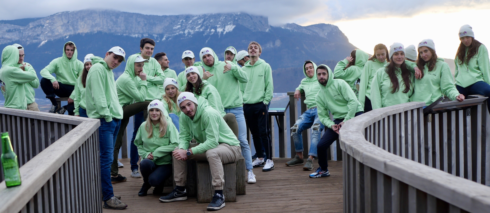

Engineering students at Grenoble INP can become involved in a range of student committees and contribute to campus life. In particular, students can campaign with an electoral slate to serve for one year on the student association executive. These campaigns require significant commitment both during preparation and during the campaign week itself.
Community involvement
Grenoble INP student committees
Secretary, sponsorship lead, ethics lead, green committee

Type
Community involvement
Period
2017-2021
Role
Executive committee member
Location
Grenoble, France
About
Involvement
As soon as I arrived at Grenoble INP, I chose to get involved in student life in several ways. I first took part in the preparatory-cycle elections, which our slate won. I then served for one year as sponsorship lead, building commercial partnerships with brands and local businesses to support our events. I also helped design and organize large-scale activities, including orientation weekends and the annual Olympiades.
When I entered the Industrial Engineering program, I immediately joined another electoral slate as secretary and ethics lead. We also won the election, and I served in these roles for a little over a year. Among other things, I helped get certain homophobic and misogynistic chants banned and advised my team on making our events more inclusive and diverse. I also took a leading role in organizing the handover weekend for the following year’s winning slate. At the same time, I was involved in the Green Committee, an independent group responsible for sustainability awareness initiatives.